Demonstrate the 2D trajectory optimization function for low thrust.
This demo is the same as the built-in demo in TrajectoryOptimization, a low-thrust transfer to Mars. This is a well-studied problem. This is indirect optimization performed in cylindrical coordinates. The method used is downhill simplex.
Things to try: see how the methods do with different initial costates.
See also CostLowThrust2D, FLowThrust2D, TrajectoryOptimization, Plot2DTrajectory, Constant, Planets
Contents
%-------------------------------------------------------------------------- % Copyright (c) 2005 Princeton Satellite Systems, Inc. % All rights reserved. %-------------------------------------------------------------------------- % Since version 7. %-------------------------------------------------------------------------- disp('This demo takes several minutes to run.') d = struct; d.d = CostLowThrust2D( 'get' );
This demo takes several minutes to run.
1. Use downhill simplex (fminsearch)
%--------------------------------- tic d.method = 'downhill simplex'; % On the next pass use the newly computed lambda as the first guess %------------------------------------------------------------------ d.repeat = 1; % Spacecraft properties %---------------------- m0 = 10000*Constant('lb force to kg'); % kg d.d.thrust = 0.0005; % kN d.d.mDot = 6.7727e-5; % thrust/uE, uE ~ 7382.6 m/s % Target planet %-------------- [name,a] = Planets('rad',4); % Mars % Heliocentric system %--------------------- d.d.mu = Constant('mu sun'); aU = Constant('au'); aF = a(1)*aU; d.d.rF = aF; % Dynamics function %------------------ d.d.rhsFun = @FLowThrust2D; d.d.plotFun = @Plot2DTrajectory; % Simplex parameters %------------------- d.d.stateTol = 1e-6; d.d.funTol = 1e-6; d.d.nIts = 2500; % function evals % Cost function called by simplex %-------------------------------- d.d.costFun = @CostLowThrust2D; % Getting messages about integration toleranges which do not affect solver warning off MATLAB:ode113:IntegrationTolNotMet; % Initial costate guess %---------------------- % [lambdaR;lambdaU;lambdaV] d.d.lambda0 = [0;-1;1]*1e5; d.d.tEnd = 1000*86400; % (s) Plot2DTrajectory(d.d.lambda0,d.d) % State: [r;rDot;v;m] %--------------------------------------------- v0 = VOrbit(aU,aU,d.d.mu); vF = VOrbit(aF,aF,d.d.mu); d.d.x0 = [aU;0;v0;m0]; d.d.xF = [d.d.rF;0;vF]; % Integration (ode113) parameters %-------------------------------- d.d.data.absTol = 1e-10; d.d.data.relTol = 2.5e-8; d.d.data.maxStep = 0.1; % ode113 will never take a step bigger than this % fraction of the end time % Weights for the costates and error in the mass equation %-------------------------------------------------------- d.d.errorScale = [1; 3e6; 1e7; 1e-2]; % Optimize the trajectory. It will use Plot2DTrajectory to plot the results %------------------------------------------------------- lambda = TrajectoryOptimization( d ); toc disp('Final Costates"') disp(lambda{1}) %-------------------------------------- % PSS internal file version information %-------------------------------------- % $Id: 6f772bb7282c9cf3518619050002fdf9a2108eaa $
Radial position error = 57463397.1744 (km)
Radial velocity error = -0.2684 (km/s)
Tangential velocity error = 1.7734 (km/s)
Time of minimum error = 7.5254 month
ans =
1.7047e+08
-0.26837
25.903
Case 1: Method: downhill simplex
Iteration Func-count f(x) Procedure
0 1 6.01431e+07
1 4 5.95565e+07 initial simplex
2 6 5.80463e+07 expand
3 7 5.80463e+07 reflect
4 9 5.61238e+07 expand
5 11 5.29135e+07 expand
6 12 5.29135e+07 reflect
7 14 4.71632e+07 expand
8 16 4.18598e+07 expand
9 17 4.18598e+07 reflect
10 19 3.56763e+07 expand
11 21 3.32293e+07 expand
12 22 3.32293e+07 reflect
13 24 3.18217e+07 expand
14 26 3.12576e+07 expand
15 27 3.12576e+07 reflect
16 29 3.10677e+07 expand
17 31 3.08714e+07 expand
18 32 3.08714e+07 reflect
19 33 3.08714e+07 reflect
20 35 3.07756e+07 expand
21 36 3.07756e+07 reflect
22 38 3.06753e+07 expand
23 39 3.06753e+07 reflect
24 40 3.06753e+07 reflect
25 42 3.05868e+07 expand
26 44 3.04588e+07 expand
27 45 3.04588e+07 reflect
28 47 3.03918e+07 expand
29 49 3.0165e+07 expand
30 50 3.0165e+07 reflect
31 51 3.0165e+07 reflect
32 53 3.0165e+07 contract inside
33 55 3.0165e+07 contract inside
34 56 3.0165e+07 reflect
35 58 3.0165e+07 contract inside
36 60 3.0165e+07 contract inside
37 61 3.0165e+07 reflect
38 63 3.00939e+07 expand
39 65 3.00939e+07 contract inside
40 66 3.00939e+07 reflect
41 68 3.00939e+07 contract inside
42 69 3.00939e+07 reflect
43 71 2.9158e+07 expand
44 72 2.9158e+07 reflect
45 74 2.9158e+07 contract inside
46 76 2.9158e+07 contract inside
47 78 2.9158e+07 contract inside
48 80 2.9158e+07 contract inside
49 82 2.9158e+07 contract inside
50 84 2.67832e+07 reflect
51 86 2.67832e+07 contract inside
52 88 2.67832e+07 contract inside
53 90 2.67832e+07 contract inside
54 92 2.59737e+07 reflect
55 94 2.59737e+07 contract inside
56 96 2.59737e+07 contract inside
57 98 2.59737e+07 contract inside
58 100 2.40979e+07 reflect
59 102 2.40979e+07 contract inside
60 104 2.40979e+07 contract inside
61 106 2.15696e+07 reflect
62 108 2.15696e+07 contract inside
63 110 2.15696e+07 contract inside
64 112 2.15696e+07 contract inside
65 114 2.05799e+07 contract inside
66 116 2.04896e+07 contract outside
67 118 2.04896e+07 contract inside
68 120 1.94198e+07 expand
69 122 1.93601e+07 reflect
70 124 1.53758e+07 expand
71 125 1.53758e+07 reflect
72 127 1.46632e+07 reflect
73 128 1.46632e+07 reflect
74 130 1.38465e+07 reflect
75 132 1.25003e+07 expand
76 134 1.25003e+07 contract inside
77 135 1.25003e+07 reflect
78 136 1.25003e+07 reflect
79 138 1.09084e+07 expand
80 139 1.09084e+07 reflect
81 141 1.09084e+07 contract inside
82 143 7.42771e+06 expand
83 144 7.42771e+06 reflect
84 146 7.42771e+06 contract inside
85 148 7.42771e+06 contract inside
86 149 7.42771e+06 reflect
87 151 7.42771e+06 contract inside
88 153 7.09489e+06 expand
89 155 7.09489e+06 contract inside
90 157 5.65987e+06 contract inside
91 159 2.31801e+06 reflect
92 161 2.31801e+06 contract inside
93 162 2.31801e+06 reflect
94 163 2.31801e+06 reflect
95 164 2.31801e+06 reflect
96 166 2.31801e+06 contract inside
97 168 2.25997e+06 contract inside
98 170 2.25997e+06 contract inside
99 172 2.25997e+06 contract inside
100 174 1.7459e+06 reflect
101 176 1.7459e+06 contract outside
102 178 1.34852e+06 reflect
103 179 1.34852e+06 reflect
104 181 1.34852e+06 contract inside
105 183 615983 contract inside
106 185 615983 contract inside
107 187 615983 contract inside
108 189 615983 contract outside
109 191 204658 reflect
110 193 204658 contract inside
111 194 204658 reflect
112 196 204658 contract inside
113 197 204658 reflect
114 199 204658 contract inside
115 201 204658 contract inside
116 203 134713 contract inside
117 205 134713 contract inside
118 210 94667 shrink
119 212 94667 contract outside
120 213 94667 reflect
121 214 94667 reflect
122 219 94667 shrink
123 221 48301.9 reflect
124 223 48301.9 contract outside
125 228 48301.9 shrink
126 229 48301.9 reflect
127 231 48301.9 contract inside
128 232 48301.9 reflect
129 233 48301.9 reflect
130 238 48301.9 shrink
131 243 48301.9 shrink
132 248 46075 shrink
133 253 46075 shrink
134 258 46075 shrink
135 263 46075 shrink
136 268 46075 shrink
137 273 46075 shrink
138 278 46075 shrink
139 283 46075 shrink
140 288 46075 shrink
141 289 46075 reflect
142 291 46063.9 expand
143 292 46063.9 reflect
144 294 46049.5 expand
145 296 46049.5 contract inside
146 297 46049.5 reflect
147 299 46049.5 contract inside
148 301 46033.5 expand
149 303 46014.6 expand
150 305 46014.6 contract inside
151 307 45991.2 expand
152 309 45991.2 contract inside
153 311 45966.4 expand
154 313 45917 expand
155 315 45901.8 reflect
156 317 45802.9 expand
157 319 45688.9 expand
158 321 45559.6 expand
159 323 45465.9 reflect
160 325 45340.2 reflect
161 327 45340.2 contract inside
162 329 45338.4 reflect
163 331 45025.2 expand
164 333 45003.4 reflect
165 335 45003.4 contract inside
166 337 44835 reflect
167 339 44401.5 expand
168 341 44401.5 contract inside
169 342 44401.5 reflect
170 344 44212.9 reflect
171 346 43357.3 expand
172 347 43357.3 reflect
173 349 42339 expand
174 351 40846.3 expand
175 353 39412.2 expand
176 355 35922.4 expand
177 357 35922.4 contract inside
178 358 35922.4 reflect
179 360 33986.3 reflect
180 362 27665.6 expand
181 363 27665.6 reflect
182 365 24447.5 reflect
183 367 14713.5 expand
184 368 14713.5 reflect
185 370 14713.5 contract inside
186 372 14713.5 contract inside
187 374 14713.5 contract inside
188 376 14713.5 contract inside
189 378 14713.5 contract inside
190 380 14713.5 contract inside
191 382 14713.5 contract inside
192 384 14713.5 contract inside
193 386 14713.5 contract inside
194 387 14713.5 reflect
195 389 14713.5 contract inside
196 391 14713.5 contract inside
197 393 14713.5 contract inside
198 395 14713.5 contract inside
199 397 14713.5 contract inside
200 399 14713.5 contract inside
201 401 14713.5 contract inside
202 403 14713.5 contract inside
203 405 14713.5 contract inside
204 407 14713.5 contract inside
205 409 14713.5 contract inside
206 411 14713.5 contract inside
207 413 14713.5 contract inside
208 415 14713.5 contract inside
209 417 14706.1 reflect
210 419 14706.1 contract inside
211 421 14706.1 contract inside
212 423 14706.1 contract inside
213 425 14706.1 contract inside
214 427 14706.1 contract inside
215 429 14701.8 reflect
216 431 14701.8 contract inside
217 433 14701.8 contract inside
218 435 14701.8 contract inside
219 437 14701.8 contract inside
220 439 14701.8 contract inside
221 441 14701.6 reflect
222 443 14701.6 contract inside
223 445 14701.6 contract inside
224 450 14701.6 shrink
225 452 14701.6 contract inside
226 454 14701 reflect
227 459 14701 shrink
228 460 14701 reflect
229 462 14701 contract inside
230 467 14701 shrink
231 472 14701 shrink
232 477 14701 shrink
233 482 14701 shrink
234 487 14701 shrink
235 492 14701 shrink
236 497 14701 shrink
237 502 14701 shrink
238 507 14701 shrink
239 508 14701 reflect
240 513 14701 shrink
241 518 14701 shrink
242 523 14701 shrink
243 528 14701 shrink
244 533 14701 shrink
245 535 14701 contract inside
246 540 14701 shrink
247 545 14701 shrink
248 550 14701 shrink
249 552 14701 contract inside
250 557 14701 shrink
251 558 14701 reflect
252 563 14701 shrink
253 564 14701 reflect
254 566 14701 contract inside
255 567 14701 reflect
256 569 14701 reflect
257 574 14701 shrink
258 576 14701 contract outside
259 578 14701 contract inside
260 583 14701 shrink
261 584 14701 reflect
262 589 14701 shrink
263 591 14701 contract outside
264 596 14701 shrink
265 598 14701 reflect
266 603 14701 shrink
267 604 14701 reflect
268 609 14701 shrink
269 611 14701 contract outside
Optimization terminated:
the current x satisfies the termination criteria using OPTIONS.TolX of 1.000000e-06
and F(X) satisfies the convergence criteria using OPTIONS.TolFun of 1.000000e-06
Radial position error = 2187.3965 (km)
Radial velocity error = -0.0036 (km/s)
Tangential velocity error = 0.0010 (km/s)
Time of minimum error = 1.3053 year
Elapsed time is 13.354376 seconds.
Final Costates"
0.006024
-9735.5
23692
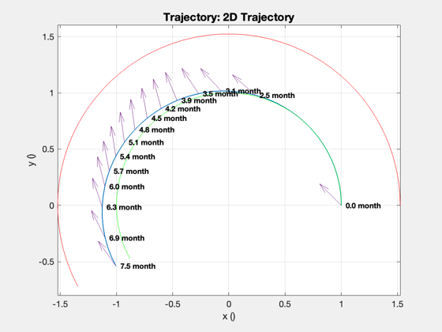 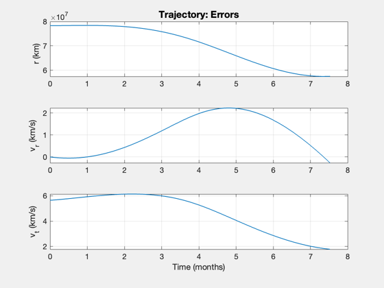 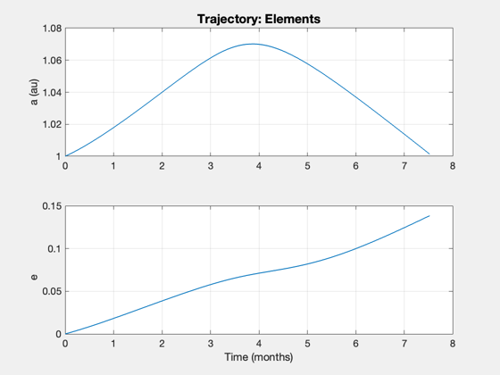 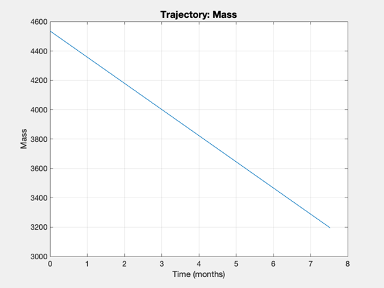 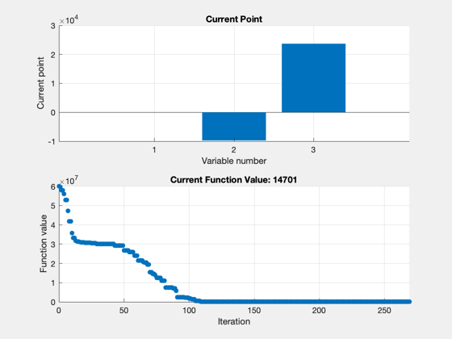  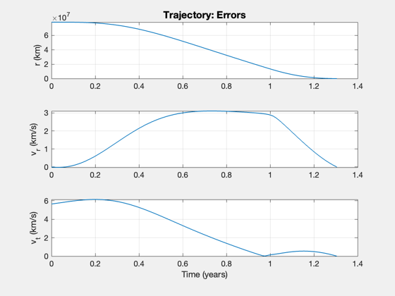 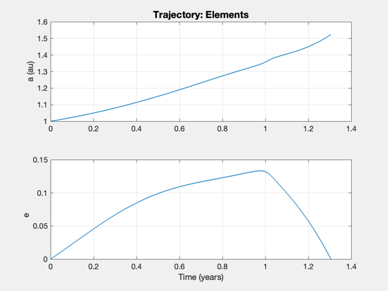 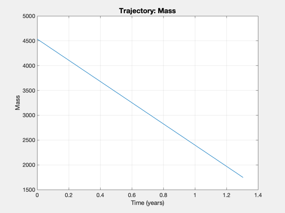
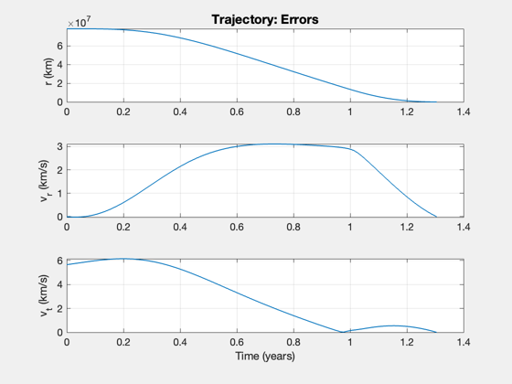 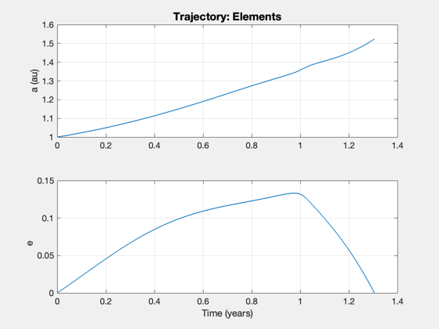 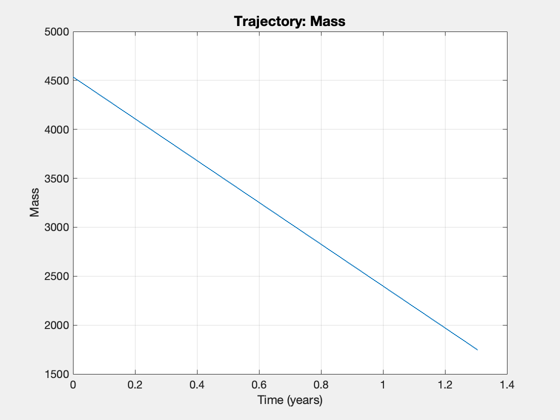